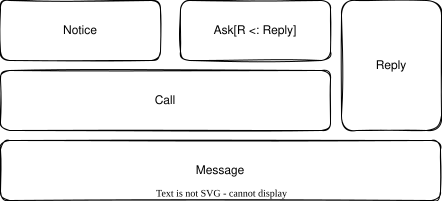
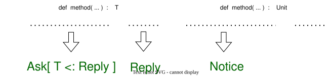

Message Model
Messages are special objects used by Actors for communication. It is recommended to define them as case classes.
Message Type Hierarchy
Message (sealed trait)
├── Call (sealed trait) — generates a Stack when received
│ ├── Notice extends Call — fire-and-forget, no reply needed
│ └── Ask[R <: Reply] — expects a typed reply
└── Reply (trait) — response to an Ask
├── TimeoutReply — system-generated timeout response (singleton)
└── ExceptionMessage — wraps a Throwable as a Reply

Call
Call represents a request message, analogous to a method call. It has two subtypes:
Notice: A fire-and-forget message, similar to a method withUnitreturn type. No reply is expected.Ask[R <: Reply]: A request-response message with a type parameterRspecifying the expected reply type.
Reply
Reply is the response to an Ask. Two special system replies exist:
TimeoutReply: A singleton generated when an Ask times out.ExceptionMessage: Wraps aThrowableto deliver exceptions as replies.
Compile-Time Type Safety
otavia enforces message type safety at compile time through the type parameters of Actor and Address:
trait Actor[+M <: Call]
trait Address[-M <: Call]
An Actor declares the types of messages it can accept via M. The corresponding Address has the contravariant type parameter, so you can only send M-typed messages to the address.
The ReplyOf[A <: Ask[?]] match type extracts the reply type R from Ask[R], ensuring that AskStack.return() only accepts the correct reply type.
// Example: compile-time type-safe messages
case class Greet(name: String) extends Notice
case class AskName(id: Int) extends Ask[NameReply]
case class NameReply(name: String) extends Reply
// Actor that accepts both types
class MyActor extends StateActor[Greet | AskName] {
override protected def resumeNotice(stack: NoticeStack[Greet]): StackYield = ???
override protected def resumeAsk(stack: AskStack[AskName]): StackYield = ???
}
Dual-Type Messages
A message can inherit both Notice and Ask. How it is processed depends on how it is sent:
case class DataUpdate(data: String) extends Notice, Ask[UnitReply]
// As Notice (no reply expected):
address.notice(DataUpdate("hello"))
// As Ask (reply expected):
address.ask(DataUpdate("hello"), state.future)

Envelope
Every message sent between actors is wrapped in an Envelope[M <: Message]:
| Field | Description |
|---|---|
address |
Sender's Address |
mid |
Unique message ID (monotonically increasing per Actor) |
msg |
The actual message payload |
rid |
Single reply ID (for individual replies) |
rids |
Array of reply IDs (for batch replies) |
Envelopes are pooled via ActorThreadIsolatedObjectPool and recycled immediately after the receiver extracts the message data. This eliminates GC pressure from high-frequency message passing.
Event Model
Events are separate from messages and represent interactions between Actors and the runtime system. Their types are fixed and cannot be customized by the developer.
TimerEvent
Generated by the Timer component:
TimeoutEvent— User-registered timeout (directly handled by developer code)ChannelTimeoutEvent— Channel-specific timeoutAskTimeoutEvent— Ask timeout (carries the askId for lookup in FutureDispatcher)ResourceTimeoutEvent— Cache resource timeout
ReactorEvent
Generated by the IoHandler within each ActorThread for IO events. Encapsulated by ChannelsActor:
RegisterReply,DeregisterReply— Channel registration resultsBindReply,ConnectReply,DisconnectReply— Network operation resultsOpenReply,ShutdownReply— File/shutdown resultsChannelClose— Channel closedReadBuffer— UDP read data (carries sender address)AcceptedEvent— New TCP connection acceptedReadCompletedEvent— Read cycle completedReadEvent— Read error notification
Events are delivered to the Actor's eventMailbox via EventableAddress.inform().